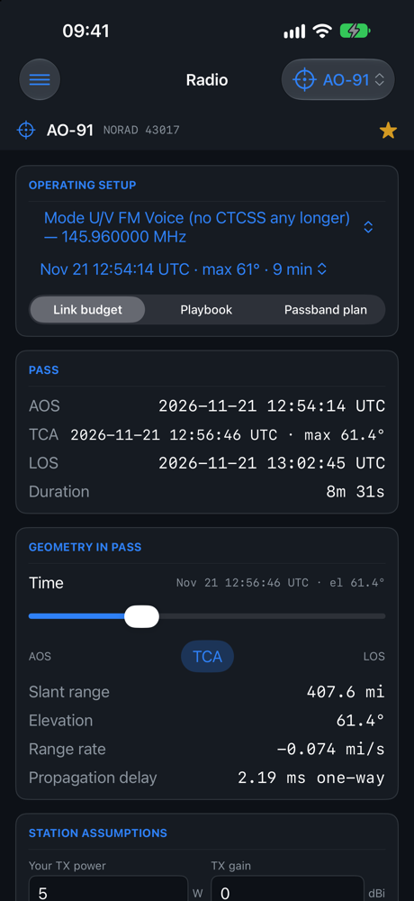

OrbitDeck can Doppler-tune your transceiver directly, with no PC or extra software, over a Bluetooth LE serial adapter, the IC-705/IC-905's built-in Bluetooth, an Icom network (Wi-Fi) connection, or a Hamlib rigctld server. It can also share that radio link with desktop programs through its own built-in rigctld server. You configure a radio in Settings and control it from the Home screen.
Overview
Rig control (CAT, Computer Aided Transceiver) keeps your radio on frequency through a satellite pass by continuously correcting for Doppler shift. OrbitDeck computes the corrected downlink and uplink from the live orbit, your station, the transponder and your per-satellite calibration (exactly what the Home Doppler card shows) and sends them to the radio.
It supports a single full-duplex satellite radio (both legs at once on MAIN/SUB), a single transceiver in split VFO (VFO A receives, VFO B transmits), a single radio on one leg only, or two radios (one for each leg). It also picks the right receive and transmit modes for each transponder, handles CW and data modes, and manages CTCSS tones per satellite.
Rig control is meant to run with OrbitDeck in the foreground, because iOS suspends Bluetooth and networking for backgrounded apps. Turn on Keep screen awake on Home (Settings → Display) to leave it running during a pass. While a background audio session (pass recording, decoding, FT4, packet) keeps OrbitDeck running, iOS may let it continue. See Transmit safety for what happens to an active transmission when the app goes to the background.
Connections & adapters
OrbitDeck reaches a radio four ways. Pick one with Connection in the radio's settings:
BLE serial adapter: a Bluetooth Low Energy UART adapter (Nordic UART Service or a generic write+notify pair) wired to the radio's CAT / CI-V / serial port. This is how CI-V, Yaesu and Kenwood radios are driven, for example with the open-source OrbitLinkS3 CI-V bridge, or the B.B. Link for the Kenwood TH-D74/D75.
Icom built-in BT: the IC-705 and IC-905 have Bluetooth LE CI-V built in, so no adapter is needed. Choose Icom built-in BT, then pick the radio under Radio BLE device. The first time, put the radio in pairing mode (Menu → Set → Bluetooth Set → Pairing Reception) before connecting; OrbitDeck then appears in the radio's list as ORBITDECK APP. (Contributed by Filip Melik; the sign-in sequence follows K7MDL2's IC-705 BLE example.)
Icom network (Wi-Fi): Icom's RS-BA1 network protocol over your local network, for network-capable Icoms (IC-9700, IC-705, IC-905). Enable Network Control on the radio with a User1 login.
Hamlib rigctld (network): a TCP connection to a Hamlib rigctld server (default port 4532) running on a nearby computer, which drives any radio Hamlib supports. This is handy for a USB-only rig an iPhone can't reach directly, or any radio you already run through Hamlib. See Using a rigctld server.
Bluetooth Classic (SPP) adapters are not supported on iOS. Apple restricts Bluetooth Classic to MFi-certified accessories, so the inexpensive HC-05/HC-06-style serial adapters (including most generic FT-817 Bluetooth adapters) cannot be opened by a normal app. Use a BLE adapter instead. Likewise, radios whose only computer interface is USB (for example the FT-991/991A and FTX-1) cannot be reached from an iPhone or iPad directly and are not listed; drive them through rigctld on a computer instead.
Adapters that work
Any BLE adapter that presents a generic UART service (Nordic UART, or a plain writable + notify characteristic pair) and matches your radio's serial electrical interface will work. Known-good options:
PDDAXLQUE DX-CP26 (RS-232 ↔ BLE): a rechargeable, battery-powered DB9 RS-232-to-Bluetooth LE serial adapter, confirmed working with OrbitDeck. A good off-the-shelf option for radios with a true RS-232 CAT port (many Yaesu and Kenwood rigs). Set the serial rate in Settings to match the radio. Product listing.
Off-the-shelf BLE serial adapter + a CI-V level converter (Icom): you do not need custom hardware for CI-V. Pair any BLE-to-RS-232 serial adapter (such as the DX-CP26 above) with an inexpensive CI-V ↔ RS-232 converter (an Icom CT-17 or any of the common clones) to reach a CI-V Icom's 3.5 mm jack. This works with OrbitDeck like any other BLE serial link.
OrbitLinkS3 on an M5Stack M5StickS3: if you'd rather have a single self-contained gadget, this open-source firmware turns an inexpensive M5Stack M5StickS3 into a rechargeable BLE ↔ CI-V bridge (no separate converter needed). Bench-validated driving an IC-821 from OrbitDeck (Doppler tuning, mode/step, passband and the One True Rule). Firmware and wiring: github.com/prstoetzer/OrbitLinkS3. It's a convenient option for CI-V, not a requirement.
Kenwood B.B. Link: the BLE adapter for the TH-D74/D75 handhelds (now discontinued, but the supported path for those radios).
No adapter (Icom): the IC-705 and IC-905 can use their built-in Bluetooth or Wi-Fi; the IC-9700 uses its Ethernet network connection. The IC-705 is validated over Wi-Fi.
Building your own is straightforward: an ESP32/M5Stack (or an nRF52 / genuine HM-10) exposing a UART GATT, wired to the radio's CAT/CI-V port with the correct levels (CI-V is 3.5 mm TTL single-wire; Yaesu/Kenwood use RS-232 or low-level serial). OrbitLinkS3 is a working reference for the CI-V case.
Supported radios
OrbitDeck speaks the Icom CI-V, Yaesu and Kenwood CAT dialects directly, plus Hamlib rigctld over the network. The radio list in Settings is:
Radio
Use
Connections
Notes
Icom IC-9700
Full duplex (MAIN/SUB), split, one leg
BLE serial, Icom network
Satellite mode and MAIN/SUB band exchange commanded automatically; data mode; CTCSS; narrow FM
Icom IC-9100, IC-910
Full duplex, split (MAIN band), one leg
BLE serial
Satellite mode commanded; CTCSS; narrow FM
Icom IC-820, IC-821, IC-970
Full duplex, one leg (IC-821 also split)
BLE serial
No CI-V PTT: key with the mic or VOX
Icom IC-705, IC-905
One leg, split, two-radio leg
BLE serial, Icom built-in BT, Icom network
Data mode; VFO B tuned directly in split; IC-905 microwave bands
Icom IC-7100, IC-7000, IC-706 / MKII / MKIIG
One leg, split
BLE serial
IC-7100 data mode; the IC-706 family has no CI-V PTT
Same-band satellites use a transmit hold instead of split (see below)
Yaesu FT-736R
Full duplex, one leg
BLE serial
Write-only CAT (no frequency read-back)
Yaesu FT-817, FT-818, FT-857, FT-897
One leg, split
BLE serial
Data mode for FT4/packet
Yaesu FT-100
One leg, split
BLE serial
Yaesu VR-5000
Receiver
BLE serial
Write-only
Kenwood TS-2000, TS-790
Full duplex, split, one leg
BLE serial
OrbitDeck enters the radio's satellite (SATL) mode automatically, MAIN = downlink, SUB = uplink; split (SATL off) uses FR/FT on the TS-2000 and FN/SP on the TS-790 (untested)
Kenwood TS-711, TS-811
One leg, split
BLE serial
Split on these uses FN/SP and is untested
Kenwood TS-590S, TS-590SG, TS-890S, TS-990S
One leg (e.g. a 10 m uplink or downlink), split
BLE serial (RS-232 CAT port)
Default rate 9600 (TS-590) or 115200 (TS-890/990), set to match the radio's COM menu; CAT CTCSS on the TS-590 only
Kenwood TH-D74, TH-D75
Receiver (band B)
B.B. Link (BLE)
All-mode receive on band B
Hamlib rigctld
Full duplex (VFO A/B), one leg
Network (TCP)
Any Hamlib-supported radio
For Icom radios you can override the CI-V address (hex); for BLE serial connections you can set the serial rate to match your adapter and radio.
Several 1.1 additions (data modes, split on some models, satellite rigs as two-radio legs, the Kenwood HF rigs) were built from the radios' published command references and Hamlib, and haven't been tried on every model yet. If something misbehaves, capture a CAT monitor trace and send it with your report.
Station configurations
In Controls (single radio) you choose what the radio does; the choices offered depend on the model:
Uplink + downlink (MAIN/SUB): one full-duplex satellite radio (e.g. IC-9700, IC-9100, FT-847, TS-2000) controls both legs. OrbitDeck commands satellite mode where the radio supports it and, on the IC-9100/9700, exchanges MAIN and SUB when needed so the downlink always lands on the band you hear (this is what makes cross-band changes such as AO-7 Mode B versus RS-44 come out right).
Uplink + downlink (split VFO): one transceiver runs VFO A as the downlink and VFO B as the uplink with SPLIT on, both Doppler-corrected. This is for same-band or same-frequency birds (packet digipeaters, ISS APRS) and for ordinary non-satellite transceivers. It's half duplex: you can't hear the satellite while transmitting. Where the radio can address VFO B directly (IC-705, IC-905, IC-9700, and the IC-7100 with firmware E4 or later, detected at connect) the receiver never moves; older rigs swap VFOs to reach VFO B, so the uplink retunes less often (Split uplink deadband) and uplink updates wait while OrbitDeck has the radio keyed. On the IC-9100/910 split runs on the MAIN band with satellite mode off, which OrbitDeck handles.
Downlink only or Uplink only: one radio controls just one leg, for example a TH-D75 on the downlink.
Two radios (turn on Two radios (separate uplink + downlink)): Radio 1 drives the downlink and Radio 2 the uplink, each on its own connection. Any transceiver can be a leg, including a full-duplex satellite rig, for example an IC-821 on 2 m up plus an IC-705 on 10 m down for AO-7 Mode A. A satellite rig used as one leg is driven as a single-VFO radio on whatever band its front panel has selected (no MAIN/SUB selection, satellite mode or band exchange), so put the right band on the active VFO before connecting. Receive-only radios aren't offered for Radio 2.
Same-band birds on a MAIN/SUB rig. A satellite rig can't put both legs on one band, so when the selected transponder's uplink and downlink are within 10 MHz (e.g. ISS APRS) OrbitDeck switches that radio to split VFO for that pass and back to satellite mode on the next cross-band bird. The FT-847 has no CAT split, so it gets a transmit hold instead: satellite mode off, the main VFO on the downlink, moving to the uplink only while keyed.
Setup checks. Before connecting, OrbitDeck catches station mistakes that would otherwise fail quietly: Two radios on but Radio 2 not set up, a Bluetooth connection with no device chosen, or both radios set to the same BLE device.
Setting it up
Open Settings → Rig control → CAT / rig control and turn on Enable CAT control.
Turn on Two radios if you use separate uplink and downlink radios. For each radio, turn on Use this radio and pick the Radio model.
Pick the Connection: for BLE serial adapter, tap BLE adapter and choose your adapter from the scan; for Icom built-in BT, tap Radio BLE device; for Icom network, enter the radio's IP, control port, username and password (stored in the iOS Keychain); for rigctld, enter the host and port.
Set the CI-V address and serial rate if needed, adjust the tuning options, and tap Done. The self-test is a quick way to confirm the link before a pass.
Controlling on Home
With a radio configured, a Rig control (CAT) card appears on Home. Tap Connect to link up; the status dot turns green and the live Downlink and Uplink dials appear (a two-radio station also shows a status line per radio). CAT tracks the same satellite and transponder shown on the Home transponder card, including the passband slider, so what you see is what the radio is tuned to. Tap Disconnect when you're done.
Beacon: shown when the satellite has a beacon or telemetry downlink; one tap tunes it (see Receive-only & beacons).
Tilt to tune passband (optional, linear transponders): roll the phone left or right to move through the passband; the further you tilt, the faster it moves, and holding it level stops. It reads the motion sensor only while the card is on screen and the app is active, and it is off again at every launch.
Track Doppler: pause or resume the tuning loop.
At passband edge: a banner when the passband offset (from the dial, the slider or tilt) has reached the edge of the transponder. OrbitDeck keeps the offset inside the passband rather than tuning you off it.
Status lines: Radio tuned to … when CAT is locked on a satellite other than the one selected (see Changing satellites mid-pass), a transmit-blocked line on a receive-only transponder, and a warning if a PTT release could not be confirmed (see Transmit safety).
Stop all: shown whenever something is running (see Stop all).
The Home Live Doppler card above it carries the SSB | CW switch for linear transponders (see Modes) and the passband slider.
Live tune mode
The Tune menu on the rig card changes which legs OrbitDeck tunes, live and without reconnecting:
Mode
Card label
What it does
Full (follow downlink)
Full
Both legs Doppler-tracked; with Follow radio tuning on, the downlink dial leads. The usual choice.
Full (follow uplink)
Full ↑
Both legs tracked; the uplink dial leads (turns on following).
Downlink only
DL only
Doppler on the downlink only; the uplink is left to you.
Uplink only
UL only
Doppler on the uplink only; the downlink is left to you.
Hold
Hold
No frequency writes at all: the radio stays where it is until you pick another mode.
The button is highlighted in the warning color whenever a mode other than Full (follow downlink) is active, so a held leg is easy to spot.
Modes, CW, data & CTCSS
Satellite-aware modes: the receive mode is chosen from the transponder's modulation as listed in SatNOGS, which names the modulation rather than the receiver mode. SSTV, AFSK/APRS packet, FSK/GMSK/G3RUH data and similar come out of an FM receiver; BPSK, FT4 and other PSK/WSJT modes are taken in USB. The uplink mode comes from SatNOGS's uplink mode when it has one, and linear transponders get the correct sideband for normal or inverting passbands.
Narrow FM on FM satellites (on by default): FM-N is commanded on voice FM, SSTV and 1200-baud packet birds where the rig can select it over CAT (IC-910/9100/9700). 9600-baud data needs wide FM and is left alone.
CW on linear transponders: the SSB | CW switch on Home's Live Doppler card (also CW on linear transponders in CAT settings) puts both legs in CW instead of USB/LSB. The dial then shows the carrier, so the uplink maps one-to-one through the transponder and your own signal returns at your CW pitch. The quick-log card logs CW with a 599 report. FT4 keeps SSB while it runs.
Data mode for FT4 and packet: while FT4, packet or SSTV is using the radio's audio, OrbitDeck requests the radio's data sub-mode so the data/USB audio port is used instead of the mic: USB-D/LSB-D and FM-D on the IC-9700, IC-705, IC-905 and IC-7100, the data mode on the FT-817/818/857/897, and the PKT modes through rigctld. The request applies only to the satellite and transponder it was made on, so data mode never follows CAT onto, say, an FM voice satellite after automatic switching. Radios without a clean CAT data mode stay on plain SSB/FM.
Per-satellite CTCSS: an uplink tone is sent only on FM uplinks. Built-in tones cover SO-50 (67.0 Hz), AO-91 (67.0 Hz), PO-101 (141.3 Hz) and the ISS cross-band repeater (67.0 Hz). In CAT settings, CTCSS for <satellite> overrides the tone for the selected satellite (Default, Off or a specific tone), and Uplink CTCSS (other satellites) is the fallback for everything else. A line below shows the tone in effect and where it came from (your setting, built-in, or global). The tone is turned off again on a transponder without one and when you disconnect.
Receive-only transponders & beacons
Transponders with no uplink (beacons, telemetry) are tuned on the downlink only, and transmitting is blocked on them for every keyer (FT4, packet, remote voice and network clients). On a full-duplex Icom satellite rig, OrbitDeck uses a receive-only layout: satellite mode off and the downlink tuned on MAIN. Satellite mode comes back when you return to a two-way transponder.
When the selected satellite has a beacon or telemetry downlink, the rig card shows a Beacon button that selects it in one tap. Select the two-way transponder on the Home transponder card to go back.
Changing satellites mid-pass
Once CAT is engaged on a satellite, it stays on it from shortly before AOS (the rotator's pre-position lead) until LOS. If you select another satellite during that window, the rig card shows Switch radio to <satellite>? with Switch and Keep, and Radio tuned to <satellite> while it stays put, so browsing the app doesn't retune the radio mid-QSO. The rotator follows the same rule, so radio and antenna never split up. Automatic satellite switching is always obeyed, and turning on Follow selection while connected in CAT settings lifts the lock entirely.
Stop all
Stop all (red, on the rig card, or on the rotator card for a station without a radio) appears whenever something is running. After a confirmation it releases PTT, stops FT4, packet and remote-voice transmit, ends rigctld/rotctld client control, disconnects the radio, and parks and disconnects the rotator.
Tuning options
Track Doppler: enable or disable the tuning loop.
Follow radio tuning (One True Rule), Follow (downlink or uplink), Dial settle and Uplink resume: see One True Rule.
Update rate: how often frequencies are sent. On a slow serial link OrbitDeck enforces a rate floor so each update's commands fit on the wire (1500 ms at 2400 baud or below, 1000 ms at 4800, 500 ms at 9600); the settings screen shows the effective rate when it's slower than yours.
Follow selection while connected: off by default (the engaged-satellite lock); on retunes the radio and re-points the rotator as soon as you pick another satellite.
Command delay: the pause between CAT frames.
MAIN = uplink, SUB = downlink: the VFO role convention for a full-duplex rig.
Command radio satellite mode and Assign MAIN/SUB bands (IC-9100/9700): for Icoms that support them over CI-V. Kenwood TS-2000/790 satellite mode is handled automatically.
FM deadband and Linear deadband: the smallest change that triggers a new command, so the radio isn't retuned needlessly. Split uplink deadband appears in split VFO mode (500–1000 Hz suits 1200-baud packet and FM voice).
Narrow FM on FM satellites and CW on linear transponders: see Modes.
Predictive lead: tune slightly ahead of the current geometry.
Downlink / Uplink transverter LO: in Hz; see Transverters.
Uplink CTCSS (other satellites) and CTCSS for <satellite>: see CTCSS.
Per-satellite oscillator calibration comes from the Calibrations screen.
One True Rule (follow the dial)
Turn on Follow radio tuning and choose whether OrbitDeck follows the Downlink (the usual choice) or the Uplink; the Home tune mode menu switches between the two as well. OrbitDeck then reads the radio: when you spin the followed dial, it folds your change into the passband offset and keeps the other leg mapped correctly through the transponder, both Doppler-corrected. This is the classic full-duplex operating rule: you tune the receiver to a station and the transmitter follows automatically. When you turn the dial, OrbitDeck briefly pauses Doppler on that leg (Dial settle, and Uplink resume for the uplink) so it doesn't fight you mid-turn, then resumes. It requires a radio that can report its frequency, which most supported radios can.
Transverters
If a leg runs through a transverter, enter its local-oscillator (LO) frequency in Hz in Downlink transverter LO and/or Uplink transverter LO (for example 9936000000 for a 10 GHz transverter with a 432 MHz IF). OrbitDeck tracks, displays and Doppler-corrects the real on-air frequency, and sends the radio the intermediate frequency (real − LO), so a rig that only tunes a lower band can still work the microwave satellite bands.
Without CAT: HOLD/TUNE calculator

Radio: link budget, Doppler playbook and passband plan
No CAT radio? When the radio isn't connected, the Home Live Doppler card has a Manual HOLD/TUNE calculator for a transponder with an uplink. Choose Hold TX or Hold RX to leave one leg on a fixed dial (an HT, or an FT-817 parked on one uplink frequency), then type the held dial in MHz (145.96), kHz (145960) or Hz, or tap Now for the current corrected dial. The calculator shows the other leg's dial to tune, updated live as the pass goes on, plus where the held leg lands in the passband (linear) or its Doppler error (FM). The keypad has a Done button.
The Radio screen complements it for planning: link budget, a Doppler playbook for the pass and a passband plan for the selected transponder.
Using a rigctld server
Choose Hamlib rigctld (network) as the connection and enter the computer's rigctld host / IP and Port (4532 by default). Hamlib drives the actual radio, so there is no radio model to pick in OrbitDeck. For a single radio choose what it Controls; for both legs on one radio, pick the Full duplex method:
VFO mode (VFOA/VFOB) (the default for new setups): VFOA carries the downlink and VFOB the uplink, each tuned with plain frequency/mode commands. This is what Gpredict and CardSat use and is the most portable with Icom satellite rigs; it avoids Hamlib retuning the wrong VFO. At connect OrbitDeck probes \chk_vfo: a rigctld started with --vfo gets the VFO inline on every command, while a plain server has the VFO selected with V. If the active VFO flickers on an Icom in satellite mode, start rigctld with -x 1.
Split (TX VFO): the uplink is tuned with Hamlib's split commands (set_split_freq, S 1 VFOB, I/X). Use it if your Hamlib backend doesn't handle VFOA/VFOB, or to keep an existing setup; the Use split VFO for full duplex toggle appears with it. Configurations saved before 1.1 keep this method.
OrbitDeck's rigctld server
OrbitDeck can also be a rigctld server, so Gpredict, SatPC32, WSJT-X or a logger on your local network can read or drive the radio through OrbitDeck's own CAT link (Bluetooth, Icom network or anything else). It's at the bottom of the CAT settings screen, in rigctld server, and is off by default.
Turn on Run rigctld server. The TCP port defaults to 4532 (any port from 1024 to 65535; tap Apply after changing it).
The section shows the Status (Listening), this device's local network address(es) with the port to enter in the client, the number of Connected clients and the Last command.
In the client, choose Hamlib NET rigctl (model 2) and enter that address and port.
What clients can do
VFOA is the downlink and VFOB the uplink ("Main"/"Sub" follow the MAIN = uplink setting). Frequencies are the radio's dial, after any transverter LO.
Read and set frequency and mode (f/F, m/M), select the VFO (v/V), and read or set the split frequency and mode (i/I, x/X). The split layout itself is fixed: receive on VFOA, transmit on VFOB. \dump_state and \chk_vfo are answered so standard Hamlib clients connect cleanly.
Reading never disturbs OrbitDeck. While OrbitDeck's Doppler loop is driving the radio, reads return the last commanded dial without extra bus traffic, so a polling logger doesn't slow tuning.
Setting a frequency takes control: the first set-frequency from a client pauses OrbitDeck's own Doppler tuning for as long as that client stays connected, so let the client do Doppler (or only read). The settings section shows A client is tuning the radio with a Resume OrbitDeck Doppler button. Doppler resumes by itself when the last controlling client disconnects or sends q. Mode, split and PTT commands don't take control.
Network PTT (opt-in)
By default clients can't key the radio: PTT commands are refused with RPRT -11. Turn on Allow PTT from network clients to let a client key the radio with T 1. A client's key is released when that client disconnects or quits, when the server is turned off or moved to another port, when OrbitDeck goes to the background, or after 3 minutes keyed. While a client has the radio keyed, the section shows A network client has the radio keyed with an Unkey now button.
T 0 releases only the calling client's own key. Clients routinely send T 0 at startup; from anyone else it's acknowledged without touching the radio, so it can never unkey another client, FT4, packet or your own transmission.
While one client holds the key, another client's T 1 is refused. A client also can't key while FT4, packet or remote voice has the transmitter, or on a receive-only transponder (see Transmit safety).
Client approval
Require approval for new clients is on by default and applies to both the rigctld and the rotctld server. A client on another device waits, with none of its commands answered (not even reads), until you answer:
An Allow network client? prompt appears on whatever screen you're on, naming the client's address and what it wants to do; the waiting client is also listed in the server's settings section.
Allow once admits it for this connection, Always allow adds its address to the server's Always allowed list, and Deny disconnects it.
Requests not answered within 30 seconds are denied, and so is any request that arrives, or is still waiting, while OrbitDeck is in the background.
Clients on this device (loopback) are always allowed.
Swipe (or long-press) an Always allowed address to remove it; it then needs approval again the next time it connects.
Turning Require approval off lets any device on your local network connect without asking, and the settings screen warns you about it.
Limits
iOS keeps the server running only while OrbitDeck is in the foreground, or while a background audio session (pass recording, decoding, remote voice) is active.
Local network only: connections arriving over a VPN tunnel or cellular are refused, even with an approved address. Wi-Fi, wired Ethernet and the Personal Hotspot bridge work.
Up to 8 clients at once. The connection isn't encrypted, so use it on a network you trust.
The server shares OrbitDeck's link, so it needs CAT to be connected to answer frequency and mode commands.
Transmit safety
Several features can key your radio over CAT: FT4 (and its Tune carrier), packet/APRS, remote voice, and network clients through the rigctld server. OrbitDeck routes all of them through a single PTT authority, so the transmitter has exactly one owner at a time and every key has a guaranteed release.
One transmitter, one owner. While one feature holds the transmitter, another asking to key is refused with Transmitter in use by <owner> — not keyed (for example, Transmitter in use by FT4). Keys and unkeys go out strictly in the order they were requested, so an unkey can never be overtaken by a later key, and stopping a feature whose key hasn't gone out yet cancels it.
No transmit without an uplink. On a receive-only (beacon/telemetry) transponder, keying is refused for every feature.
Maximum key times. Each owner has its own limit above its normal transmission, and nobody can hold the key longer than 240 seconds:
Owner
Normal transmission
Unkeyed after
FT4
one burst, about 5 s
30 s
FT4 Tune
up to 10 s
20 s
Packet
watchdog up to 60 s
65 s
Remote voice
3-minute limit
190 s
Network (rigctld) client
3-minute server limit
190 s
Stop, disconnect and link drops. On Disconnect, Stop all or an unexpected link drop, a PTT-off is sent before the link closes. If that unkey can't be confirmed while the radio may have been keyed, the rig card shows a warning (PTT release could not be confirmed … Check that the radio isn't still transmitting.) that stays until you tap Dismiss. OrbitDeck keeps retrying the unkey for a while, and sends it again on the next connection before any tuning starts.
App termination. If OrbitDeck is closed while it may have the radio keyed, it writes the PTT-off directly to the radio on the way out.
Background. When OrbitDeck goes to the background, remote voice, FT4 Tune and network-client keys are released at once, since nobody can hold the talk button, tap Tune or watch a network client from there. FT4 and packet sessions you started are built to keep running with the screen locked, so they may continue to transmit (FT4 sequences, packet beacons and acks) while iOS keeps OrbitDeck running.
Stop all also stops remote-voice transmit.
OrbitDeck can only manage transmissions it keys over CAT. Pressing the mic PTT, a TNC, or VOX keys the radio without OrbitDeck knowing, and several older radios (the IC-706 family, IC-820/821, IC-970 and the IC-2xx/4xx/575/1275 generation) have no CI-V PTT command at all. Split rigs that can report transmit over CI-V hold uplink updates while they say they're transmitting.
CAT monitor & self-test
The Diagnostics section of CAT settings has two tools:
CAT monitor: when on, records every frame sent to and received from each radio (hex plus a short decode, a bounded number of recent lines). View CAT monitor shows it live with Copy, Share and Clear. It costs nothing when off and is never saved.
Self-test radio (one per radio): with CAT disconnected, connects to the radio on its own, runs any session handshake, reads the frequency and mode, sets the same mode back and checks the radio's acknowledgment (CI-V FB/FA, Kenwood ?;, rigctld RPRT), leaving the radio as it was. Each step shows pass/fail with a hint for anything that fails, for example how to put an IC-705 into Bluetooth Pairing Reception, or whether a rigctld server runs with --vfo. Turn on the monitor first to see every frame.
Disconnecting
On Disconnect OrbitDeck unkeys first, then leaves the radio as it found it (best effort, while the link is still up): uplink CTCSS off, Kenwood out of satellite (SATL) mode, split off and back on VFO A, and Icom satellite mode off with MAIN selected. If a link drops unexpectedly (a Wi-Fi or Bluetooth blip, or the app being backgrounded), OrbitDeck reconnects automatically, with a limit so a radio that stays down isn't retried forever.
Permissions & privacy
The first time you connect, iOS asks for Bluetooth and/or Local Network permission. These connections go directly from your device to your radio (or to your own rigctld computer) over Bluetooth LE or your local network; nothing is sent to the developer. Any radio network password is stored in the iOS Keychain. The rigctld server only listens when you turn it on and only accepts local-network clients. See the privacy policy.
Troubleshooting
Adapter not found: make sure it's powered, in range, and not already connected to another app or the radio's own session; confirm Bluetooth permission was granted. Unnamed adapters still appear in the list (sorted by signal strength).
IC-705/IC-905 Bluetooth won't connect: the first time, put the radio in Menu → Set → Bluetooth Set → Pairing Reception, then connect again (the Home card shows this hint too).
Mode changes but frequency doesn't (handhelds): the TH-D74/D75 refuse off-grid writes; OrbitDeck rounds to the mode's step (20 Hz fine, 5 kHz FM). Make sure the radio is on band B.
Nothing moves: confirm the adapter's serial rate matches the radio, the CI-V address is correct, Track Doppler is on and the tune mode isn't Hold. Run the self-test.
The radio doesn't follow a new satellite: during a pass CAT stays on the engaged satellite until you tap Switch (see Changing satellites mid-pass).
"Transmit disabled" or "Transmitter in use by …": the transponder has no uplink, or another feature has the transmitter (see Transmit safety).
Network radio won't connect: enable Network Control on the radio, set a User1 login, and check the IP and control port (serial is control +1). OrbitDeck reports where the handshake stalled (no reply, login rejected, or connection refused) so you can tell reachability from credentials from a busy radio.
IC-9700 (or IC-905) network specifically: unlike the Wi-Fi IC-705, the IC-9700 uses its wired Ethernet jack. Make sure the radio is on the same subnet your iPhone/iPad is on (route Wi-Fi and the radio's LAN together, no client isolation), Network Control and CI-V Transceive are ON, and no other program (RS-BA1 Remote Utility, wfview) already holds the radio's single network session. Power-cycle the radio if a previous session hung. Leave the CI-V address override blank so the 9700's default (A2) is used.
A desktop program can't reach OrbitDeck's rigctld server: check that the server says Listening, that the program uses the address and port shown, that both are on the same Wi-Fi (not over VPN or cellular), and that you answered the Allow network client? prompt within 30 seconds with OrbitDeck in the foreground.
Capture a log: for connection problems, turn on Settings → Diagnostics → Diagnostic logs, reproduce the issue, then share the log file with the developer. It records each connection stage. A CAT monitor trace shows the frames themselves.